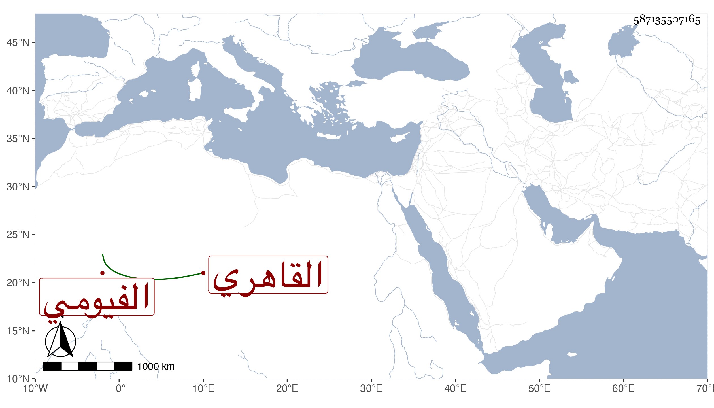

0902Sakhawi.DawLamic.ITO20230111-ara1.EIS1600.587135507165
Biography ID: 587135507165
206
محمد بن أحمد بن محمد الشرف الفيومي ثم القاهري أخو العز عبد العزيز الماضي ويعرف بشريف بالتصغير . ولد في سنة أربع وعشرين وثمانمائة ، ونشأ فحفظ وسمع مع أخيه على شيخنا في سنة إحدى وخمسين ، وتعاني الرسلية ثم التوكيل بأبواب القضاة . ودخل كل مدخل وأهين غير مرة من السلطان فمن دونه لمزيد جرأته وإقدامه وأوصافه . وحج مع ابن مزهر في الرجبية ومع ابن الشحنة في خدمتهما وزوج ولده لابنة المحيوي عبد القادر الحمامي بعد موته فورث منها بعد موتها في الطاعون جملة وهو الآن مبعد عن باب أمير سلاح وكاتب السر .
